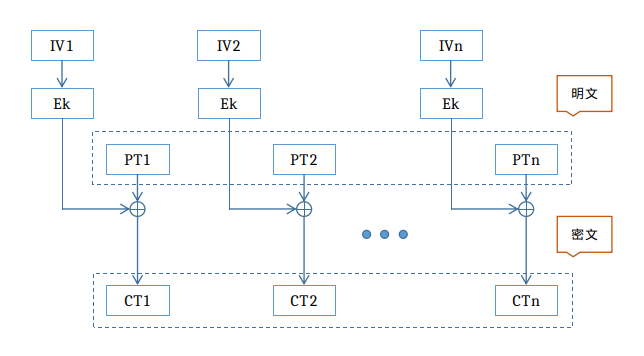
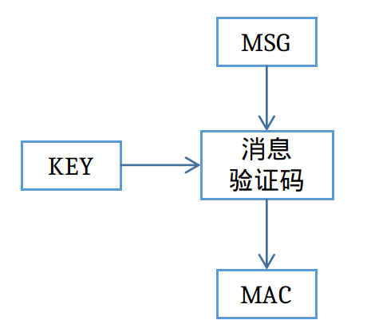
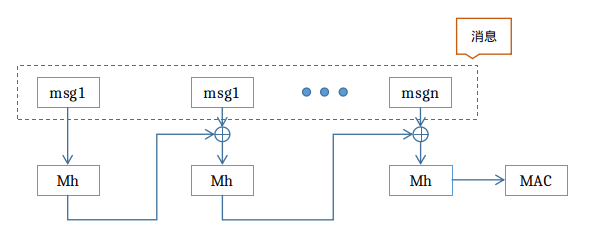

AES-GCM
总览
AES是一种对称加密算法，它的相关概念在此不赘述，本文档主要介绍AES-GCM的原理和实现。
GCM ( Galois/Counter Mode) 指的是该对称加密采用Counter模式，并带有GMAC消息认证码。 在详细介绍AES-GCM之前，我们先了解一些相关概念。
CTR（CounTeR）
在CTR模式下，我们对一个逐次累加的计数器进行加密，用加密后的比特序列与明文分组进行异或得到密文。过程如下图：

其中， IV为初始化向量，Ek表示ECB文本加密，PT表示输入的明文，CT表示输出的密文。
在BL602中，我们可以直接使用硬件完成CTR算法，即设置key密钥后，输入IV以及需要加密的明文，硬件会自动完成累加计数加密并输出密文。
CTR模式的优点是： 1）支持加解密并行计算，可事先进行加解密准备； 2）错误密文中的对应比特只会影响明文中的对应比特。 但是它不能提供密文消息完整性校验的功能。
MAC（Message Authentication Code）
想要校验消息的完整性，必须引入另一个概念：消息验证码。消息验证码是一种与秘钥相关的单项散列函数，过程如下图所示：

密文的收发双发需要提前共享一个秘钥。密文发送者将密文的MAC值随密文一起发送，密文接收者通过共享秘钥计算收到密文的MAC值， 这样就可以对收到的密文做完整性校验。当篡改者篡改密文后，没有共享秘钥，就无法计算出篡改后的密文的MAC值。
GMAC（Galois message authentication code mode）
对应到上图中的消息认证码，GMAC就是利用伽罗华域(Galois Field，GF，有限域)乘法运算来计算消息的MAC值。 假设秘钥长度为128bits, 当密文大于128bits时，需要将密文按128bits进行分组。应用流程如下图：

其中，msg为需要验证的消息，Mh表示在有限域上做乘法运算，MAC即为生成的验证码。
在BL602中，我们可以直接使用硬件完成GMAC验证。